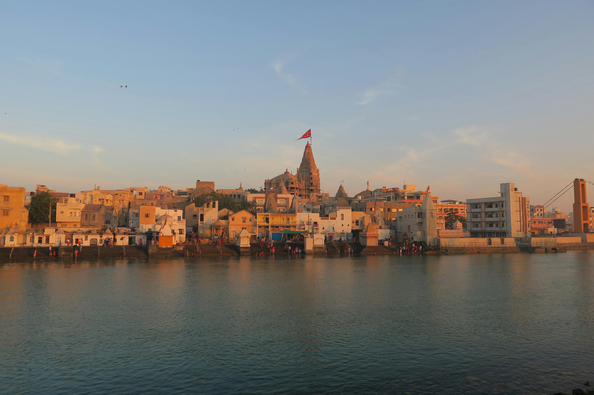

At the far western coast of Bharat, where the Gomti River meets the Arabian Sea, stands Dwarka, the city of Lord Krishna, timeless and sacred. Dwarka is also a revered place for performing Pind Daan and Shraadh.
In Dwarka, the prayers flow with the river, carried by the winds, and finally rest in the divine presence of Krishna himself.
Why Choose Dwarka for Pind Daan?
- Ocean meets river: The Gomti’s confluence with the sea is spiritually significant and perfect for ancestral offerings.
- Krishna’s kingdom: Performing Shraadh here invites the blessings of Dwarkadhish, the Lord of Dharma and Compassion.
- Theertha Mahima: Scriptures describe coastal pilgrimages such as Dwarka are deeply cleansing for both karma and pitru rina (ancestral debt).
Especially during Pitru Paksha, Avidhava Navami, or Amavasya, the punya (spiritual merit) of performing these rituals here is said to multiply.
The Ritual Process – Simple, Sacred, Scriptural
Guided by Vedic purohits, the rites follow traditional steps:
- Sankalpa: You take a vow to honour specific ancestors.
- Tarpan: Water and sesame offerings with mantras on the Gomti’s banks.
- Pinda Daan: Balls of rice and barley offered with prayers.
- Feeding cows, crows, and Brahmins: Symbolic gestures completing the cycle of giving.
All of this is done in the presence of the sea, the temple, and the divine murti of Krishna, making your act of remembrance both personal and cosmic.
What Do Scriptures Say?
The Garuda Purana and Skanda Purana highlight the value of offering pindas at oceanic theerthas. Dwarka, as the realm of Krishna and one of the char dham, holds the power to liberate ancestors whose souls are wandering or unfulfilled.
समुद्रे च तथा तीर्थं, द्वारकायां च विशेषतः।
By offering pindas at the ocean and especially at Dwarka, the ancestors find deep satisfaction and peace. (Garuda Purana, paraphrased)
पितृणां तृप्तिदानेन, दातव्यं तत्र मानवः॥
Continuing the Pilgrimage
To complete the journey of Shraadh and spiritual healing, the following are recommended:
- Somnath – For Jyotirlinga darshan and prayers for protection.
- Gaya or Prayagraj – For pitru tarpan in the three realms (sky, earth, and water).
Dwarka calls gently. If your heart feels drawn to offer peace to your ancestors here, we are here to help.
Message us on WhatsApp for guidance, purohit support, and step-by-step help for performing Pind Daan as per your family’s needs.